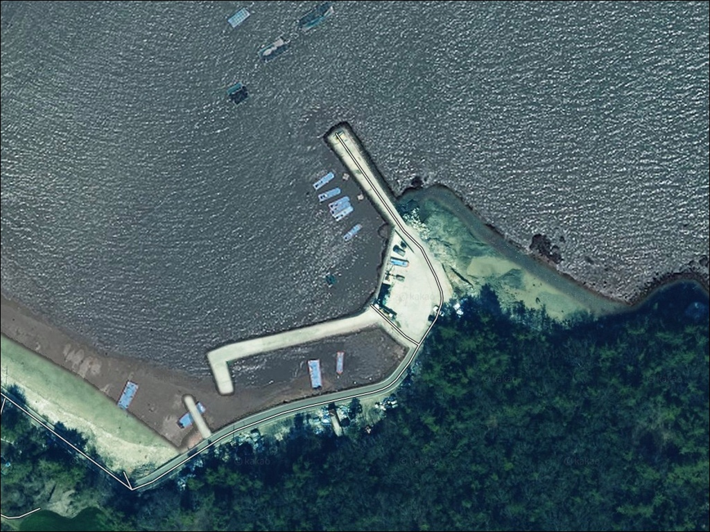
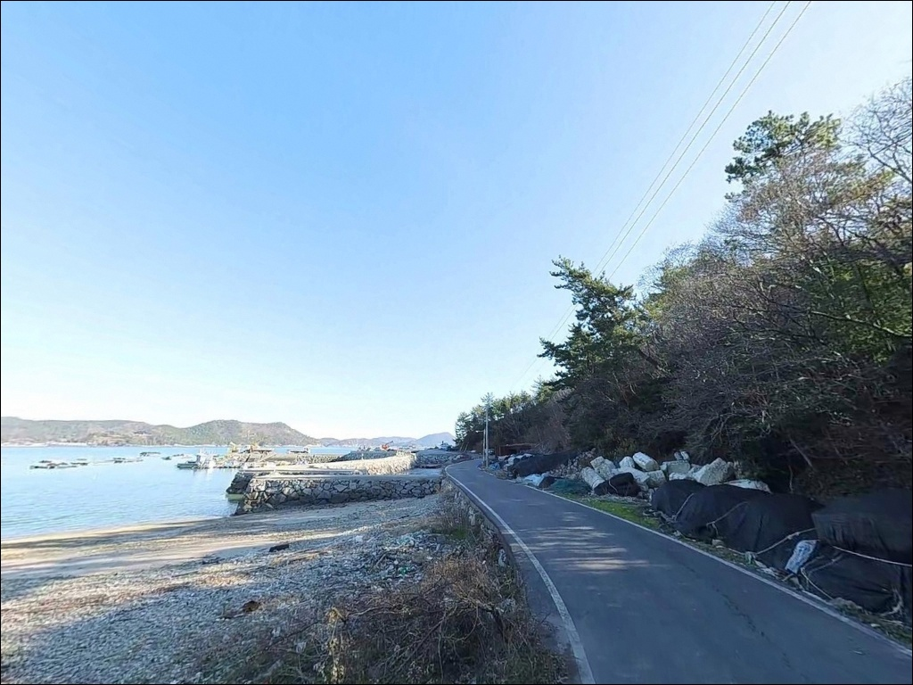
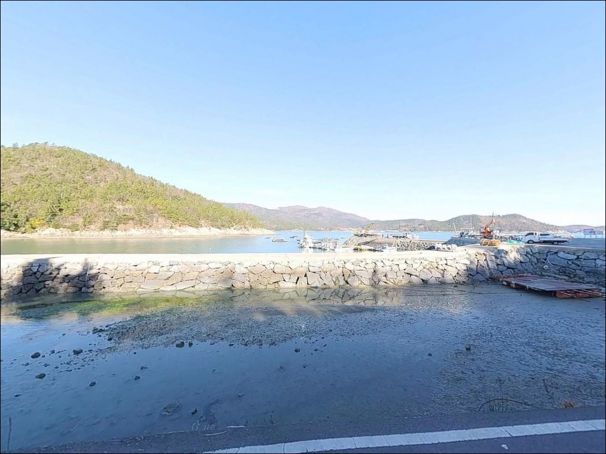
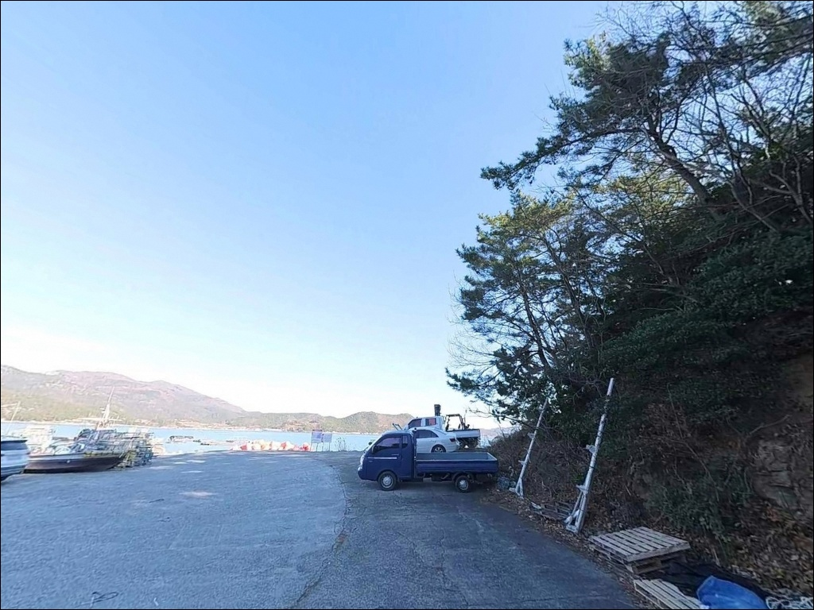
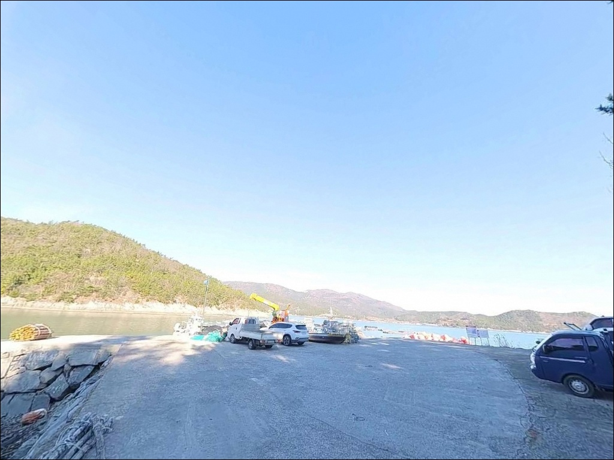
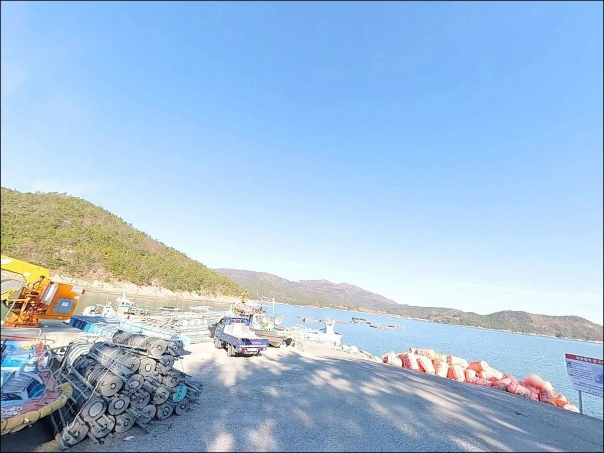
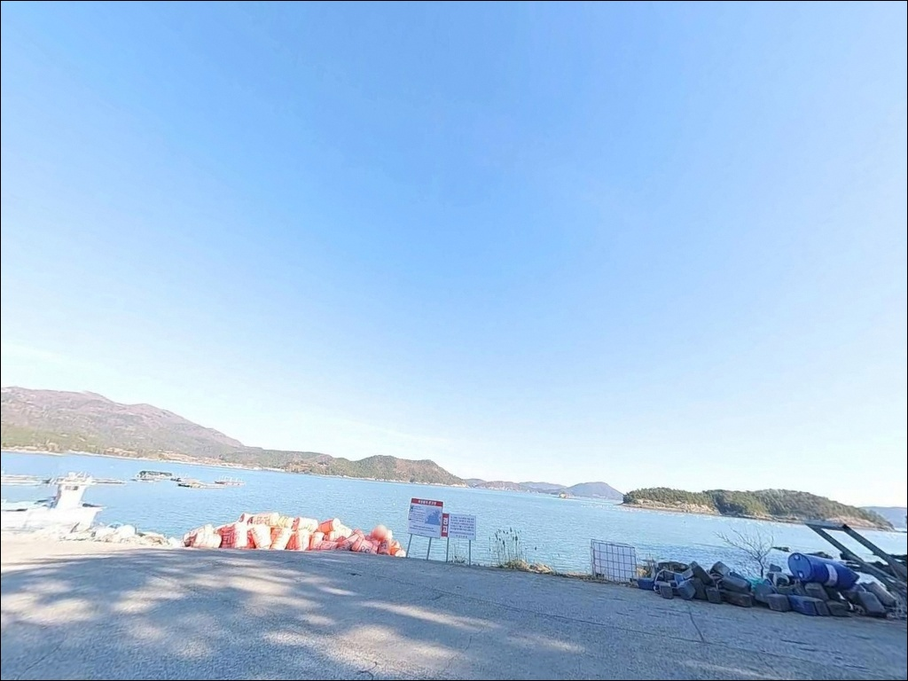
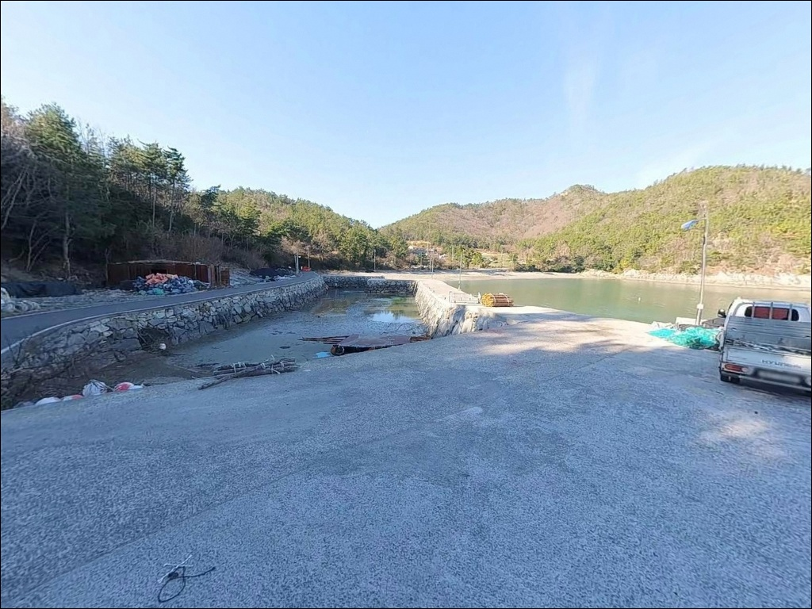
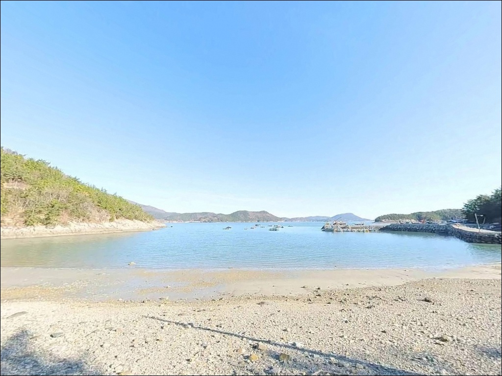

채비가 쓸려나갈 때, 덕중리방파제 3.1노트 조류 타는 정조 타이밍
이 페이지에는 광고(제휴 링크 포함)가 있으며, 광고 링크를 통해 구매하면 운영자가 판매 수익 또는 수수료를 받을 수 있습니다. 포인트 사진: 카카오맵 스카이뷰·로드뷰. 이 페이지의 지도·사진 이미지는 카카오맵의 실제 서비스 이미지와 다를 수 있습니다.


포인트 안내
덕중리방파제
전남 고흥군 도화면 덕중리 산 2-1
사리 전후 타이밍에 덕중리방파제를 찾으면
외항에서 어떤 채비를 내려도
거금수도 조류가 그냥 흘려버립니다.
최강 창조류 3.1노트가 기록되는 이 해역에서
채비를 잡아줄 수 있는 타이밍은
조금 전후 또는 정조 직전으로 좁혀집니다.
고흥 도화면 남해안, 거금수도를 정면으로 바라보는
덕중리방파제는 공식 어항으로 등록된 대형 항구가 아닙니다.
자연마을 앞에 놓인 소형 방파제이지만
방파제 끝단 수심이 7m 이상으로 떨어지고
조류 흐름이 살아 있는 구조라
원투·찌낚시·루어를 두루 운용할 수 있는
지형 조건을 갖추고 있습니다.
이 글은 덕중리방파제의 진입 동선,
차박 여건, 물때 판단 기준,
낚시 방식별 공략 조건에 집중합니다.
조황 단정이나 특정 어종 보장은
이 글의 범위에 포함되지 않습니다.

1. 진입 동선과 차량 접근 여건
덕중리방파제는 고흥읍에서 국도 27호선을 타고
도화면 방향으로 이동한 뒤
해안도로를 따라 덕중마을로 진입하는 동선이 기본입니다.
발포항 기준 북동쪽 약 2.3km 지점에 위치하며,
마을 도로를 따라 방파제까지
차량 직접 진입이 가능한 구조입니다.
마을도로 폭은 3~4m 수준으로,
일반 승용차나 중형 SUV는 통행에 큰 어려움이 없는 편입니다.
다만 일부 구간은 교행이 제한되는 좁은 구간이 포함되어 있어
대형 캠핑카나 장축형 차량이라면
출발 전 위성지도로 진입로를 먼저 확인하는 것이
헛걸음을 막는 첫 번째 조건입니다.
주차는 방파제 입구 인근 소형 공터와
도로변 여유 공간을 활용하는 방식이 일반적입니다.
소형 어촌 방파제 특성상 수용 대수가 많지 않으므로
선착순으로 자리가 결정되는 구조입니다.
주차 후에는 어선 이동 동선을 막지 않는 자리를
먼저 확인하는 편이 좋습니다.

2. 차박 환경과 야간 체류 여건
덕중리는 10가구 미만의 소규모 자연마을입니다.
야간에는 차량 통행이 거의 없는 편이며
민가 밀집도가 낮아
조용한 분위기에서 하룻밤 머무르기에
나쁘지 않은 환경입니다.
마을 뒤쪽은 임야가 받쳐 주고
전면은 거금수도 방향 바다로 열려 있어
바다를 정면으로 바라보는 자리가 확보됩니다.
다만 가로등 시설이 제한적이어서
방파제 끝단 쪽은 야간에 상당히 어두운 편입니다.
개인 헤드랜턴과 보조 조명은
낚시 도구보다 먼저 챙겨야 할 항목입니다.
거금수도 방향 외해로 직접 노출된 구조라
남풍·동풍이 강한 날에는 바람 영향을 직접 받는 편이므로
출발 전 기상 확인이 선행되어야 합니다.
차박을 메인으로 계획한다면
방파제 입구 공터의 주차 면수가 넉넉하지 않다는 점을
미리 감안해야 합니다.
낚시를 마친 뒤 조용히 쉬어가는 용도로는
마을과 맞닿은 한적한 분위기가 어울리는 포인트입니다.


3. 주변 편의시설 및 인프라 현황
덕중리방파제 반경 3km 이내에는
편의점이나 마트를 기대하기 어렵습니다.
소규모 자연마을 특성상 마을 내 상점이 없어
식수, 얼음, 낚시 소품, 연료 모두
출발 전에 완비하고 진입하는 것이 원칙입니다.
도화면 소재지까지는 차량으로 약 15분 거리입니다.
마트, 식당, 주유소 이용이 가능해
부족한 준비물이 있다면 이 동선을 활용하는 편이 현실적입니다.
다만 도화면 소재지도 규모가 크지 않으므로
낚시 전문 소품이나 얼음 수량이 부족할 경우를 대비해
고흥읍 방면에서 미리 준비해 오는 방식이 더 안전합니다.
반경 10km권으로 확장하면
나로대교 방향을 통해 나로도항 일대에 접근할 수 있습니다.
낚시 관련 소품과 기본 식자재를 보충하는 데
활용할 수 있는 동선입니다.

4. 진입 전 반드시 챙겨야 할 준비사항
덕중리방파제 방문 전에 가장 먼저 확인할 것은 물때입니다.
거금수도는 조류가 강하기로 알려진 해역으로,
최강 창조류 3.1노트, 최강 낙조류 2.7노트 수준이 기록됩니다.
바다타임에서 도화면 기준 물때를 확인하고
조금 전후 또는 정조 직전 타이밍을 노려
출발 시각을 맞추는 것이 이 포인트의 기본 전략입니다.
기상 확인도 선행이 필요합니다.
남향 외해 노출 구조상
예보와 달리 현장 바람이 강한 경우가 있어
출발 당일 아침 기상청 해양기상 앱을 한 번 더 확인하는 것이
포인트 낭비를 막는 조건입니다.
방파제 끝단은 파고가 높은 날
너울이 올라오는 경우가 있으므로
파고 1.5m 이상 예보일에는 외항 쪽 접근을 자제해야 합니다.
반경 3km 이내 편의시설이 없는 구조이므로
식수, 연료, 비상약품을 포함한 자급 준비를 갖추고 진입합니다.
외항 노출 지형 특성상 채비 손실이 생길 수 있어
봉돌과 바늘류는 여분을 넉넉하게 챙기는 편이 좋습니다.
야간 낚시라면 구명조끼와 헤드랜턴은
진입 전에 반드시 확인해야 하는 항목입니다.

5. 거금수도 지형 기반 낚시 여건 분석
덕중리방파제는 고흥반도 남서단에서
거금수도를 향해 돌출된 소형 직선형 방파제입니다.
외항은 완전 개방형으로 거금수도 조류가 직접 닿는 구조이며,
내항은 좁고 잔잔한 수역이 형성됩니다.
방파제 끝단이 수심 변화가 가장 큰 핵심 포인트이며,
끝단으로 갈수록 7~9m 이상의 수심층이 형성됩니다.
바닥 저질은 펄 계열이며 수중 암반과 혼합된 구간이 있습니다.
외항 측면과 방파제 석축 경계에는
암반 구조가 발달해 있어
특정 어종의 서식과 은신 공간이 자연스럽게 형성됩니다.
내항 쪽은 완만하고 얕은 수심 구조로
찌낚시보다는 생활낚시 위주로 운용하는 구간입니다.
조류는 외해 방향으로 직선 흐름이 형성되며,
조금 전후에는 흐름이 느려져 채비 운용이 수월해집니다.
사리 전후에는 조류가 너무 강해져
원투 봉돌이 밀려가거나 찌가 버티지 못하는 상황이 생깁니다.
이 포인트를 제대로 공략하려면 정조 타이밍 계산이 먼저입니다.
출조 전 고흥 도화면 일대 조황을 꼭 검색해 보시기 바랍니다.
덕중리방파제는 거금수도 조류가 직접 닿는 구조로,
물때 선택이 조과의 전제 조건입니다.


6. 포인트에 어울리는 낚시 스타일
원투낚시는 이 포인트에서 가장 기본적인 낚시 방식입니다.
외항 전면부에서 장타로 채비를 보내면
수심이 충분히 확보되는 구간까지 닿습니다.
조류가 강한 만큼 봉돌 무게를 충분히 설정해야 하며,
정조 타이밍에 집중적으로 운용하는 방식이 효율적입니다.
펄 바닥층을 노리는 어종 공략에 적합한 구조입니다.
릴찌낚시는 외항 방향의 조류 흐름을 활용해
채비를 자연스럽게 흘리는 방식입니다.
방파제 끝단에서 수중여와 경계면 주변을 공략하는 구성이
이 포인트 지형에 잘 맞습니다.
조류가 느려지는 조금 전후에 흘림 속도를 맞추면
채비가 안정적으로 목적지까지 도달하는 편입니다.
볼락 라이트게임은 야간에 효율이 올라오는 방식입니다.
방파제 석축 경계와 끝단 주변 암반 구간이
볼락의 은신처로 기능하는 구조입니다.
소형 지그헤드 채비로 천천히 탐색하듯 운용하는 방식이
이 포인트에 어울립니다.
에깅은 외항 방향 방파제 끝단을 집중 공략하는 방식입니다.
거금수도 일대는 갑오징어 에깅이 성행하는 해역이며,
봄부터 초겨울까지 시즌 폭이 넓어
다양한 시기에 시도해볼 수 있는 스타일입니다.

7. 대안 포인트와 플랜 B 동선
덕중리방파제에서 주차 여건이 여의치 않거나
조류가 너무 강해 채비 운용이 어려울 때
발포마을 방파제가 가장 가까운 대안입니다.
덕중리에서 약 2.3km 거리로,
같은 거금수도 해역 조건을 공유하며
규모가 조금 더 넓은 편입니다.
구암방파제는 도화면 구암리에 위치하며
덕중리에서 약 6km 거리입니다.
도화면 해안선을 따라 이동하면 닿을 수 있어
포인트가 붐빌 때 대안으로 고려해볼 수 있는 곳입니다.
덕중리와 유사한 소형 방파제 구조로,
같은 스타일의 낚시 방식을 그대로 적용할 수 있습니다.
발포해수욕장 인근 주차 공간은
차박 대안으로 활용하기 좋은 구도입니다.
화장실 시설이 갖춰져 있고
소나무 숲이 조성된 환경이라
덕중리보다 인프라 면에서 여유가 있습니다.
낚시를 마친 뒤 이동해 하룻밤 머무는 동선으로
묶어서 계획할 수 있습니다.
발포항 방향으로 이동하면
인프라와 대안 낚시 자리를 동시에 확보할 수 있는 동선이 완성됩니다.

거금수도 조류를 이해하면
덕중리방파제가 달라 보입니다
원투낚시나 릴찌낚시를 즐기는 낚시인이라면
덕중리방파제의 지형 조건은
잘 맞는 구조입니다.
외항 방향 수심과 조류 흐름이
복수 낚시 방식을 소화할 수 있는 구조이며,
온라인 정보가 많지 않아
직접 발품을 팔아야 하는 탐험형 포인트이기도 합니다.
반면 물때 계산 없이 사리 전후에 진입하거나
편의시설 없이 장거리를 이동해 오면
낚시보다 다른 일로 발이 묶이는 상황을
맞닥뜨릴 수 있습니다.
물때 확인, 자급 준비, 진입로 점검,
이 세 가지를 갖추고 간다면
조용하고 기억에 남는 포인트가 될 수 있는 곳입니다.
거금수도를 바라보며 조류가 잔잔해지는 타이밍을 기다리고,
어두운 마을 밤에 랜턴 하나 켜두고 낚시와 차박을 함께 즐기려는
낚시인에게 덕중리방파제는 조용한 선택지가 될 수 있습니다.